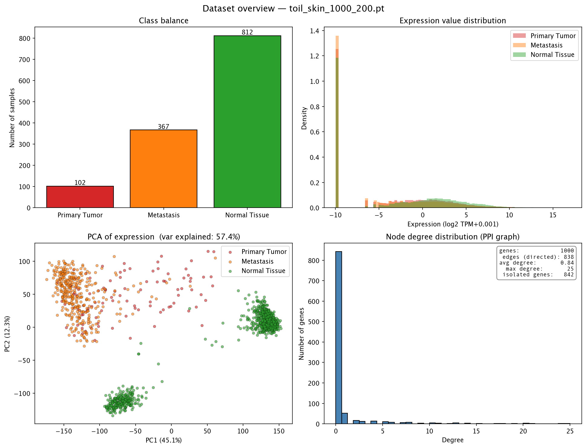
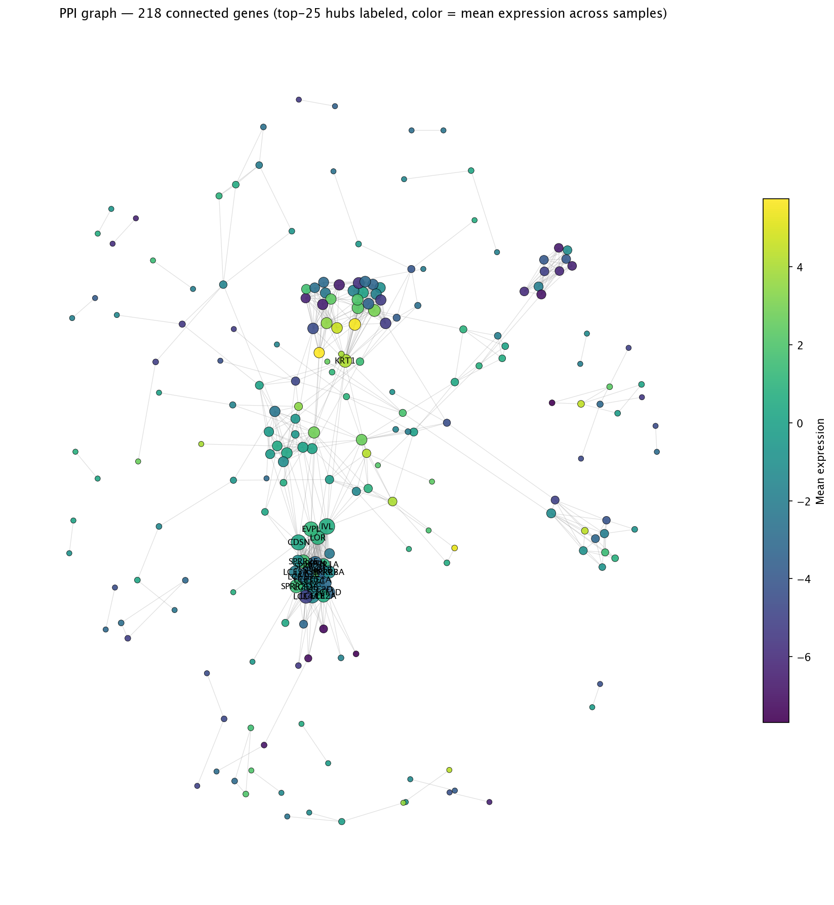

← back to predictions site
Where the data comes from
Dataset file: toil_skin_1000_200.pt · run: run_multiseed_seed2
In one sentence. Every sample in this project is a
patient's gene-expression measurement, paired with the protein–protein
interaction (PPI) network of the genes we measured, packaged together as
a single graph the GAT can consume.
The two data sources
1. Gene expression — UCSC Xena TOIL recompute
Skin tumor samples come from TCGA-SKCM (The Cancer
Genome Atlas, skin cutaneous melanoma) and healthy skin from
GTEx (Genotype-Tissue Expression). Both are
reprocessed together by the UCSC Xena TOIL pipeline,
which applies the same alignment, quantification, and normalization
to every sample. This matters: comparing two cohorts processed by
different pipelines introduces "batch effects" that often dominate
any biological signal. TOIL eliminates that confounder by design.
Values are reported as log2(TPM + 0.001): roughly
"how much each gene is being expressed, on a log scale."
2. Protein interactions — STRING
Edges between genes in each sample's graph come from
STRING-DB, a database of known
protein–protein interactions. We use only physical
interactions (proteins that actually bind) at confidence
threshold ≥ 200 — a moderately permissive cutoff that keeps
well-supported edges and trims speculative ones.
The same edge set is used for every sample; only the node
features (expression values) change patient to patient.
Three classes, one task
| Label | Samples |
|---|
| Primary Tumor | 102 |
| Metastasis | 367 |
| Normal Tissue | 812 |
The model is trained to look at a sample's expression-on-PPI graph and
decide which of these three categories it belongs to. The Normal-skin
class comes from GTEx; both tumor classes come from TCGA-SKCM.
What each sample looks like
- 1000 genes (nodes) per sample — the
genes whose expression varies most across the cohort. Less variable
genes are dropped because they carry little discriminative information.
- 838 directed edges per sample
(≈ 419 unique interactions, both directions kept
so message-passing can flow either way).
- Average degree 0.84; max degree
25; 842 genes
have no PPI partners in this panel and act as isolated nodes — the
model still uses their expression directly via self-loops.
Snapshot — class balance, expression distributions, PCA, degree
Four sanity-check views of the dataset before any modeling:
- Top-left: how many samples per class.
- Top-right: distribution of log-expression values
across all genes in each class. Tumor and metastasis distributions
look broadly similar; normal skin is offset.
- Bottom-left: PCA of raw expression (no model
involved). Even a simple linear projection separates Normal from
Tumor cleanly — the harder task is splitting Primary vs Metastasis.
PC1 + PC2 explain 57.4% of variance.
- Bottom-right: degree distribution of the PPI
graph. A few hub genes have many partners; most have a handful.

The PPI graph itself
Force-directed layout of the same PPI network used in every sample's
graph. Node color = average expression across all samples in the
cohort (blue → yellow); node size = number of PPI partners. The
top-25 hub genes are labeled.
Why hubs matter for interpretability. Genes with many
PPI partners are easy targets for any attention mechanism — they
collect information from a lot of neighbors. That's why every
attention finding in this project is benchmarked against a
node-degree baseline (see the
attention interpretability page).
An attention ranking that beats degree is doing something the
static graph alone can't.

Provenance summary
- Source: TCGA-SKCM + GTEx skin, jointly reprocessed
by the UCSC Xena TOIL pipeline.
- Quantification: log2(TPM + 0.001).
- Gene panel: top-1000 most-variable
protein-coding genes.
- Graph: STRING physical PPIs, confidence ≥ 200.
- Per-sample graph: 1000 nodes,
838 directed edges (shared topology, per-sample
expression features).
- Total samples: 1281
(102 Primary Tumor / 367 Metastasis / 812 Normal Tissue).